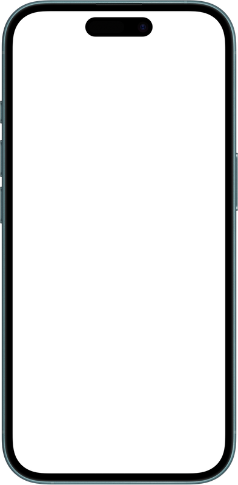

UI DESIGN · INTERACTION DESIGN · DESIGN SYSTEMS
Mountain & Forge
A collaborative design project for a local blacksmith business, exploring how interface design, visual systems, and thoughtful content structure can bring traditional craftsmanship into a modern digital experience.

THE PROJECT
Designing a digital experience for a traditional craft.
Mountain & Forge was a collaborative university project created for a local blacksmith business. Our team developed the design and structure for a complete website that could communicate the character of the business while providing customers with a clear, approachable digital experience.
The project required us to think beyond individual screens and consider how the entire experience would fit together. We established a visual direction, organized information, planned page layouts, and documented how the interface should function across different pages and screen sizes. My contributions focused on UI design, wireframing, website layout, and design documentation.
THE CHALLENGE
Bringing craftsmanship into a modern digital space.
Blacksmithing is a physical, handcrafted discipline. Translating that character into a digital interface meant finding a balance between a distinctive visual identity and a clear, usable website experience.
The website needed to feel professional enough to support an actual business while retaining a strong sense of personality. Visitors also needed to be able to discover the business, browse its work, understand its products and services, and navigate the different sections.
Our team approached this as both a visual and structural challenge. We worked toward a consistent system of color, typography, spacing, imagery, and layout so that the individual pages would feel like parts of one cohesive interface rather than disconnected designs.
MY ROLE
My contributions to the interface.
I worked as part of the design team, focusing primarily on the website's interface, visual structure, and documentation.
UI Design
Helped develop the visual interface and establish the website's overall look and feel, including visual hierarchy, spacing, components, and page presentation.
Wireframing
Created wireframes to explore page structure, content placement, and functionality before moving into the visual design.
Website Layout
Planned the placement and hierarchy of content throughout the website, helping define how visitors could move between sections and pages.
Layout Diagrams
Created layout diagrams to communicate the intended structure of the website and document important design decisions for the team.
Team Collaboration
Collaborated with teammates throughout the design process, bringing individual contributions together into a consistent website concept.
Design Documentation
Contributed to the project's extensive design documentation, helping create a shared reference for the website's structure and visual direction.
DESIGN DIRECTION
Building a visual language around the forge.
The interface needed to connect the digital experience with the physical nature of blacksmithing while remaining clear and approachable as a modern website.
We explored how color, typography, imagery, and layout could work together to create a visual identity that felt grounded in the business without relying entirely on traditional or literal blacksmith imagery. Consistency across these elements helped establish a recognizable visual language for the interface.
COLOR PALETTE
A practical color system built around the brand.
The Mountain & Forge color system uses black, white, brown, grey, and dark green as the primary visual foundation for backgrounds, text, and interface elements. Additional colors provide functional feedback for states such as order status and errors, helping communicate information consistently throughout the experience.
#FFFFFF
#000000
#1B4332
#6F4E37
#D3D3D3
#FFD966
#CC5500
#00A000
#FF0000

The system color palette and the relationship between primary, secondary, accent, order-status, and error colors.
TYPOGRAPHY & LAYOUT
Establishing consistency through type, spacing, and scale.
The design system uses consistent spacing, sizing, and typography rules to create a more predictable interface across the website. These shared guidelines help keep layouts aligned and establish a clear hierarchy between headings, body text, and supporting information.
8px Grid
An 8px grid system was used to maintain consistent spacing and alignment throughout the interface.
16px Minimum
The documented system specifies a minimum size of 16px for interactive touch targets.
24px
A 24px margin value was used as part of the spacing system.
24px
A 24px padding value was used to create consistent internal spacing within interface elements.
16px
Body content uses a default font size of 16px.
31px
Large headings use a 31px type size to establish visual hierarchy.
Arial Regular — 16px
Arial — 14px for captions
WIREFRAMES & LAYOUT
Defining the structure before the final interface.
Before focusing on the final visual treatment, our team worked through the website's structure using wireframes and layout diagrams.
This stage allowed us to focus on hierarchy, content placement, navigation, and functionality without being distracted by the final visual styling. Wireframes made it easier to explore different arrangements and gave the team a shared reference point as the design developed.

An early wireframe exploring website structure.

Additional page structure and layout exploration.
DESIGN DOCUMENTATION
Documenting the experience from concept to interface.
A major project deliverable was a 46-page design document covering the website's structure, functionality, visual direction, and key design decisions.
Creating this documentation required us to think through the experience beyond individual mockups. The website's major sections and interface decisions needed to be organized and explained so that the entire team could understand the intended design.
I contributed through UI design, wireframes, website layout, and layout diagrams, helping translate the team's ideas into a documented and cohesive design direction.


THE FINAL WEBSITE
Bringing the design direction into a working experience.
After the design documentation was completed, the project moved into website implementation.
Due to the project's time constraints, the final website was implemented using Lovable based on the team's completed design documentation. The documented layouts and visual direction provided a foundation for translating the design concept into a working website.
This stage gave me another perspective on the relationship between design and implementation. Clear design documentation helps communicate the intended structure, visual hierarchy, and overall direction so that the resulting experience stays connected to the original concept.
VIEW WEBSITE →MOBILE EXPERIENCE
Designing beyond the desktop screen.
The mobile experience needed to carry the visual hierarchy and identity of the desktop design into a smaller screen.
A scrolling screen recording provides a more dynamic presentation than a static screenshot, showing how the mobile layout appears as visitors move through the website's content.
RESPONSIVE DESIGN
The interface in motion.
The video demonstrates the mobile version of the Mountain & Forge website as a user scrolls through the experience.

REFLECTION
What I took away from the project.
Mountain & Forge gave me experience contributing
design work to a collaborative project for an actual
business. It strengthened my understanding of
wireframing, UI design, layout planning, visual
systems, and design documentation.
The 46-page design document was especially valuable
because it required the team to think through the
experience in much greater detail than individual
mockups alone. It also highlighted how clear
documentation can help communicate a design when
it moves into implementation.
Most importantly, the project taught me how to
contribute focused interface design work within
a team while keeping the larger experience in mind.
It reinforced the importance of consistency,
communication, and thoughtful structure when
bringing a digital experience together.